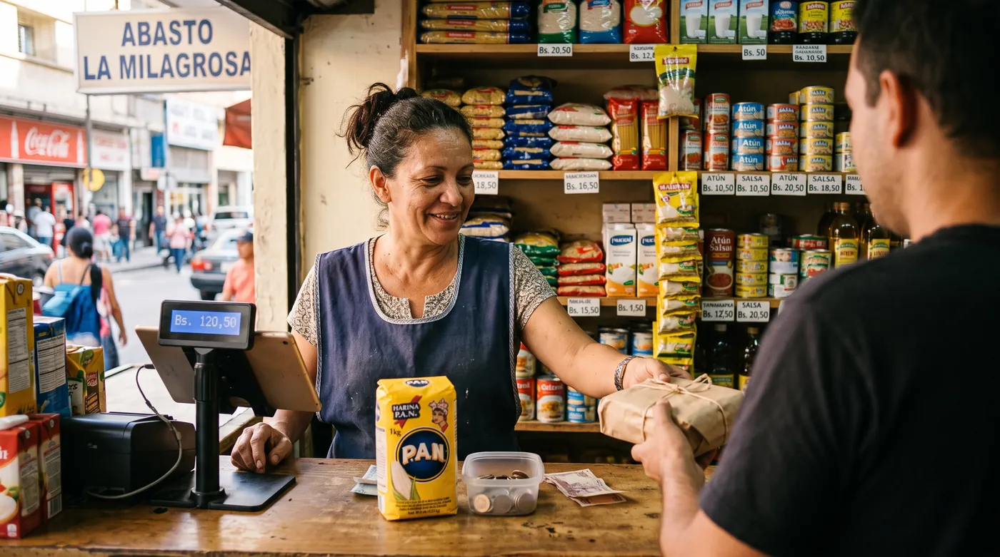

Sistema de caja multimoneda en Venezuela: cobrar en bolívares y en dólares sin perder el control
Un cliente lleva tres cosas, te da un billete de veinte, y le debes un vuelto que no tienes en la moneda que corresponde. Haces la cuenta mental con una tasa que recuerdas a medias, le devuelves una mezcla de bolívares y monedas de veinticinco centavos, anotas algo en el reverso de una factura y sigues, porque hay cuatro personas esperando. Multiplica eso por noventa clientes y ya sabes por qué la caja no cuadra al cerrar. Trabajar con dos monedas no es un problema de contabilidad. Es un problema de mostrador, y se resuelve en el mostrador.

La tasa: de dónde sale y dónde debe vivir
El punto de partida es el tipo de cambio de referencia que publica el Banco Central de Venezuela. Esa es la referencia oficial y la que usará tu contador. El propio BCV define el tipo de cambio en su glosario, y conviene leerlo una vez para hablar el mismo idioma que tu contabilidad.
Ahora, lo que decide si tu negocio funciona no es cuál es la tasa, sino dónde vive. En la mayoría de los comercios pequeños la tasa vive en la cabeza de quien está en la caja, y por eso hay tres tasas distintas circulando el mismo día: la de la mañana, la que aplicó el muchacho de la tarde y la que usó el dueño para una venta grande.
Un software de caja que sirva para Venezuela tiene que hacer tres cosas con la tasa, y son sencillas de comprobar en una demostración. Guardarla en un solo sitio, aplicarla igual en todas las cajas hasta que tú la cambies, y dejarla registrada en cada venta para que dentro de tres semanas se pueda saber a qué tasa se cobró aquella factura. Si el sistema deja que cada cajero convierta por su cuenta, no es multimoneda: es monomoneda con discusiones.
El pago mixto, la función que casi nadie prueba
Aquí está la prueba que separa un sistema que realmente maneja dos monedas de uno que solo las muestra. Registra una venta. Cobra una parte en divisas y el resto en bolívares, en la misma factura. ¿El sistema lo permite, convierte a tu tasa guardada y registra cada parte por separado?
Muchos no pueden. Te dejan elegir la moneda de la venta, que no es lo mismo. Y en el momento en que el sistema te obliga a una sola moneda por operación, la mitad de cada cobro mixto se va a un cuaderno, y a partir de ahí el inventario valorizado, el margen y el cierre dejan de ser ciertos.
Tres cosas más que conviene exigir en la demostración, en este orden:
- El precio visible en las dos monedas, en pantalla y en el ticket, para que el cliente vea la conversión en lugar de confiar en ella.
- El vuelto calculado en la moneda que sí tengas, con la misma tasa guardada, sin cuentas mentales.
- La tasa aplicada guardada en la venta, no solo en la configuración, porque los reclamos llegan después.
El vuelto que no tienes
La falta de billetes de baja denominación es el dolor de cabeza diario del comercio venezolano, y lleva años siéndolo. Tienes billetes de veinte y no de uno, o tienes bolívares y el cliente pagó en divisas. Los comercios han improvisado siempre las mismas tres salidas: dar el vuelto en la otra moneda, redondear, o quedar debiendo para la próxima.
Las dos primeras están bien siempre que pasen por la caja a tu tasa guardada, para que la conversión quede registrada y no absorbida. La tercera es donde se pierde el dinero. Un saldo a favor anotado en un papel, o que solo recuerda la persona que atendió, es un pasivo que no puedes ver ni contar. Y cuando el cliente vuelve dentro de dos semanas y reclama, o pierdes el dinero o pierdes al cliente.
La versión ordenada de esa misma costumbre es el crédito de cliente, lo que en otros países se llama fiado: el saldo queda registrado a nombre de la persona, ella lo ve, tú lo ves, y funciona como un motivo para regresar. Es exactamente el mismo mecanismo que explicamos en nuestra guía sobre cómo llevar el control del fiado sin cuaderno, con una función extra aquí: absorber el vuelto que físicamente no puedes entregar, sin que nadie pierda.
El vuelto que quedaste debiendo y no registraste no es un redondeo. Es un préstamo que te hizo tu cliente sin saberlo, y lo vas a pagar en confianza.
Por qué el cierre dejó de cuadrar
Casi todo comercio que empieza a cobrar en dos monedas ve cómo su conteo de cierre se va desviando. Las causas suelen ser tres, y ninguna es robo.
Primero, las conversiones ocurren a tasas ligeramente distintas porque ocurren en la cabeza de la gente. Segundo, el vuelto entregado en la otra moneda no se registra como conversión, así que el efectivo se mueve entre gavetas sin dejar rastro. Tercero, el cierre se hace sobre un total ya convertido en lugar de contar cada moneda por separado, lo que esconde la desviación en vez de mostrarla.
La solución es más de procedimiento que de tecnología. Fija la tasa en un solo lugar y a una hora del día. Obliga a que toda conversión pase por la caja. Y cierra contando cada moneda aparte, comparando cada una contra lo que dice el sistema. Si aparece una diferencia, ya sabes en qué moneda está, que es la mitad del trabajo de encontrarla. Sobre el resto de la disciplina de caja, nuestra guía de flujo de caja para negocios pequeños aplica igual aquí.
Facturación y divisas: lo que sí hay que verificar
Este es el punto donde conviene ir despacio y no creerle a nadie que venda software. Cuando el cobro se hace en moneda extranjera, la práctica generalizada es que la factura refleje el monto en divisas, la tasa de referencia aplicada y el equivalente en bolívares. Además existe un impuesto específico sobre determinadas transacciones en moneda distinta al bolívar, conocido como IGTF, cuya alícuota y cuyas exenciones se han modificado en varias oportunidades.
No vamos a darte cifras aquí, y desconfía de cualquier página que te las dé sin fecha. Lo que sí podemos decirte con seguridad es qué necesitas del software para que cualquier cálculo posterior sea posible: que separe con claridad los cobros en bolívares de los cobros en divisas, que guarde la tasa aplicada en cada operación, y que puedas exportar todo eso en un formato que tu contador pueda usar. Sin esas tres cosas, ningún cálculo fiscal se sostiene.
Y una advertencia sobre la máquina fiscal. La obligación de emitir facturas por medios autorizados depende de tu condición de contribuyente y la define la administración tributaria, no tu proveedor. Si un vendedor te dice que su sistema «cumple con el SENIAT», pídele que te explique exactamente cómo, con qué equipo homologado, y que te dé el contacto de un comercio venezolano que ya lo tenga funcionando.
Cuando se va la luz o el internet
En Venezuela esto no es un supuesto, es parte de la semana. Un sistema en la nube que deja de vender cuando cae la conexión no es viable, y casi todos los proveedores lo saben, así que todos anuncian modo sin conexión.
La diferencia está en qué cubre ese modo. Vender sin conexión es lo común. Poder consultar el inventario, aplicar tu tasa guardada, cobrar un pago mixto y revisar el saldo de un cliente estando sin conexión es mucho menos común, y son justamente las cosas que necesitas cuando no hay luz y la cola crece. Compruébalo en lugar de leerlo: apaga los datos y el wifi, y prueba una venta en dos monedas con consulta de inventario y de saldo de cliente. Lo que falle ese día fallará también el día de verdad.
Qué mirar, y quién lo resuelve
En la práctica eliges entre tres familias: los proveedores locales centrados en facturación y máquina fiscal, las cajas en la nube internacionales, y los sistemas construidos alrededor del manejo de varias monedas. Ten claro cuál de tus restricciones pesa más antes de armar la lista corta.
digabloPos
Del lado comercial cubre justo lo que describe este artículo: multimoneda con convertidor y una tasa de cambio propia del establecimiento, de modo que la tasa vive en un solo sitio y no en cinco cabezas. Registra cada forma de pago por separado, incluye crédito de cliente para los saldos que no puedes entregar en efectivo, funciona totalmente sin conexión y sin funciones capadas con sincronización al volver la luz y la red, y permite permisos por empleado con tope de descuento. No impone ninguna comisión ni procesador de pago, así que sigues libre de cobrar en efectivo, por transferencia o como te convenga. El plan base es gratuito, y como las tarifas cambian, confirma la oferta vigente con el proveedor.
El límite, dicho claro. digabloPos se describe como preparado para la facturación electrónica y tiene certificación fiscal únicamente en Francia. No anuncia homologación fiscal venezolana. Si la máquina fiscal es una obligación viva en tu caso, pregúntale al proveedor qué integración existe hoy en Venezuela y toma esa respuesta como determinante.
👍 Puntos fuertes
- Tasa propia del establecimiento, guardada en un solo lugar
- Crédito de cliente, que absorbe el vuelto que no tienes
- Sin conexión de verdad, con inventario y saldos incluidos
- Sin comisión obligatoria sobre tus cobros
- Topes de descuento y PIN por empleado
👎 A verificar
- No anuncia homologación fiscal en Venezuela, confírmalo antes de contratar
- Marca joven en el país, pide una demostración en vivo
- Los módulos más allá de la caja base son de pago
Proveedores locales de facturación
Hay proveedores venezolanos cuyo negocio central es la facturación y la integración con equipos fiscales homologados, y que además manejan cobro en divisas. Si eres contribuyente obligado y ese es tu problema urgente, empezar por ahí es razonable: resuelve primero lo que tiene sanción asociada.
Lo que conviene hacer demostrar: cómo se fija la tasa y quién puede cambiarla, si el pago mixto funciona en una sola factura, qué sigue operativo sin conexión, y el costo anual total una vez sumados el equipo, el soporte y las licencias por sucursal.
👍 Puntos fuertes
- La parte fiscal es su especialidad, no un añadido
- Soporte local que conoce la práctica vigente
👎 A verificar
- Pago mixto y alcance sin conexión varían, pídelo en demostración
- Costo total con equipo y licencias por sucursal
Una caja en la nube internacional
Las cajas en la nube internacionales son baratas, están bien hechas y se aprenden rápido, y muchas funcionan sin conexión. Como base para un negocio pequeño que en la práctica cobra casi todo en una sola moneda, cumplen. Lo que hay que revisar antes de decidir es hasta dónde llega su manejo de varias monedas: mostrar un segundo precio es habitual, guardar tu propia tasa y liquidar una venta entre dos monedas lo es bastante menos. Y la parte fiscal venezolana seguirá siendo un asunto aparte que tendrás que resolver igual.
👍 Puntos fuertes
- Bajo costo, maduras y rápidas de montar
- La venta sin conexión suele estar cubierta
👎 Límites
- La profundidad multimoneda varía, prueba el pago mixto
- La facturación local queda por resolver aparte
Prueba una venta en dos monedas antes de decidir
Registra un producto, cobra la mitad en divisas y la mitad en bolívares, y revisa que el ticket muestre las dos y la tasa aplicada.
Probar digabloPos gratisTabla resumen
| Lo que necesita un comercio con dos monedas | digabloPos | Proveedor local | Caja internacional |
|---|---|---|---|
| Tasa propia, guardada en un solo lugar | Sí | Normalmente | Variable |
| Pago mixto en una sola factura | Sí | Pídelo en demo | Pídelo en demo |
| Saldo a favor del cliente registrado | Sí | Variable | Variable |
| Sin conexión, con inventario y saldos | Sí | Variable | Solo venta, a menudo |
| Homologación fiscal venezolana | No anunciada | Su especialidad | Pregúntalo |
| Comisión obligatoria sobre cobros | Ninguna | Variable | Variable |
Elaborado a partir de la documentación pública consultada en agosto de 2026 y de las funciones confirmadas por los proveedores. «Pídelo en demo» no significa que no exista: significa que no pudimos confirmarlo públicamente y que debes exigir que te lo muestren sobre tu propio catálogo.
Preguntas frecuentes
¿Qué tasa de cambio debo usar en mi negocio?
El Banco Central de Venezuela publica un tipo de cambio de referencia, y esa es la tasa que sirve de base para efectos fiscales y contables. Lo que tu software tiene que garantizar es que esa tasa viva en un solo lugar, que se aplique igual en todas las cajas y que quede registrada en cada venta. Para saber exactamente qué tasa corresponde a tu caso y con qué periodicidad actualizarla, consulta con tu contador o directamente con el SENIAT.
¿Cómo registro una venta pagada mitad en divisas y mitad en bolívares?
Necesitas un sistema que acepte pago mixto en una sola factura, que convierta a tu tasa guardada y que registre cada parte por separado. Si el software te obliga a elegir una sola moneda por venta, la otra mitad termina en un cuaderno y el cierre deja de cuadrar. Pide que te lo demuestren antes de contratar, no después.
¿Qué hago cuando no tengo vuelto en la moneda correcta?
En la práctica los comercios hacen tres cosas: dan el vuelto en la otra moneda a su tasa, redondean, o dejan el saldo a favor del cliente para la próxima compra. Las tres funcionan, pero solo la tercera evita discusiones, y únicamente si queda registrada a nombre del cliente dentro del sistema y no en un papelito. Un saldo a favor bien registrado además hace que el cliente vuelva.
¿Qué es el IGTF y me aplica?
Es un impuesto que grava determinadas transacciones realizadas en moneda distinta al bolívar. Su alícuota, sus exenciones y los sujetos obligados han cambiado varias veces desde su creación, así que no tomes por buena ninguna cifra que leas en un blog, incluida esta página. Lo que sí conviene exigirle a tu software es que distinga con claridad los cobros en divisas de los cobros en bolívares, porque sin esa separación ningún cálculo posterior es confiable.
¿El software de caja me sustituye la máquina fiscal?
No, son cosas distintas y conviene no mezclarlas. La obligación de emitir facturas por medios autorizados depende de tu condición de contribuyente y la define la administración tributaria, no tu proveedor de software. Verifica tu situación con el SENIAT o con tu contador, y pregúntale al proveedor de forma directa qué integración tiene hoy en Venezuela, con un comercio al que puedas llamar.
¿Por qué mi cierre de caja nunca cuadra desde que cobro en dos monedas?
Casi siempre por tres motivos, y ninguno es robo. Las conversiones se hacen mentalmente a tasas ligeramente distintas durante el día, el vuelto entregado en la otra moneda no se registra como conversión, y el cierre se hace sobre un total convertido en lugar de contar cada moneda por separado. Fija la tasa en un solo lugar, obliga a que toda conversión pase por la caja y cuenta cada moneda aparte.
Una tasa, una caja, dos monedas
Deja de convertir de cabeza. Fija la tasa una vez y que cada venta, cada pago y cada saldo la usen.
Crear mi caja gratisFuentes oficiales
En materia cambiaria y tributaria las reglas se mueven. Verifícalas en la fuente y no en un blog.
- Banco Central de Venezuela: tipo de cambio de referencia y estadísticas oficiales.
- Glosario del BCV, tipo de cambio: la definición oficial del concepto que usará tu contador.